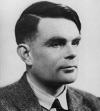

1945 yılında matematikçi Alan Turing (1912–1954) İngiliz hükümeti tarafından II. Dünya Savaşı’ndaki müttefik zaferinin kahramanlarından biri olarak onurlandırıldı. Ancak on yıldan daha az bir süre içinde aynı hükümet homoseksüel olduğu için onu tutukladı, yargıladı ve aşağılanmasına neden oldu. Bu yaşadıkları Turing’i intihara sürükledi.

Mancherster’daki intiharı onu eşcinsel hakları hareketinin erken dönem şehitlerinden biri haline getirdi. İlk bilgisayarların yapılmasına katkı sağlayan parlak beyinlerden biriydi. Alman ordusu tarafından kullanılan gizli kodların kırılmasında son derece önemli bir rol oynamıştı.
Turing, Londra’da doğdu. Önde gelen bir yatılı okula gitti. Burada homoseksüel olduğunun farkına vardı. Cambridge Üniversitesi’ndeki King’s Kolej’de matematik eğitimi almaya başladı. 1934 yılında mezun oldu.
İlk önemli makalesi On Computable Numbers (Hesaplanabilir Sayılar Üzerine) 1936 yılında yayınlandı. Bu sırada yirmi dört yaşındaydı. Makalede farklı işlevler görebilecek “evrensel makina” (universal machine) kavramını ortaya attı. Bu konsepti tamamen kuramsal bir fikir jimnastiği için kullanmıştı. Ancak onun da beklentilerini aşan bir biçimde düşünceleri, daha sonraki yıllarda bilgisayar biliminin temellerini atacaktı.
Büyük Britanya’nın Almanya’ya savaş açmasından bir gün sonra 4 Eylül 1939 tarihinde gizli bir askeri üs olan Bletchley Park’da göreve başladı. Sonraki beş yıl boyunca Bletchley Park’ta görevli matematikçiler Nazi kodlarını çözmek için uğraştılar. Nazi “Enigma” kodunun çözülüşü Alman askeri haberleşmesinin deşifre olmasını sağladı. Bu savaşta büyük bir avantaj elde edilmesi demekti.
Savaştan sonra Turing bilgisayar çalışmalarına devam etti. Dünyanın ilk çalışan bilgisayarlarından biri olan Manchester Mark I’in inşasına yardımcı oldu. Ortada henüz onu çalıştırabilecek bir bilgisayar bile yokken dünyanın ilk satranç bilgisayar programını geliştirdi.
1952 yılında “ahlaksızlığı” nedeniyle tutuklandı. Hapse mahkum olmaktan son anda kurtuldu. Ancak eşcinseliğini “tedavi etmek” amacıyla çeşitli tıbbi müdahalelere maruz bırakıldı. Bunların arasında östrojen enjeksiyonu da vardı. Siyanür enjekte edilmiş bir elma yiyerek kırk bir yaşında öldü. Bu olay kayıtlara intihar olarak geçse de aralarında annesinin de bulunduğu bazı kişiler bunun bir kaza hatta cinayet olabileceğinden şüphelendiler. 2009 yılında İngiltere hükümeti Turing’den resmen özür diledi.
Ek Bilgiler
1- Bilgisayar teknolojisine katkı yapanlara verilen uluslararası bir ödül olan “A. M. Turing Ödülü” adını 1966 yılında ünlü matematikçiden aldı.
2- Turing uzun mesafe koşmaktan hoşlanıyordu. Bir keresinde bir maratonda tam 2 saat 46 dakika ve 3 saniye boyunca koşmuştu (42 km). Neredeyse 1948 yılındaki İngiliz Olimpiyat Takımı’na giriyordu.
3- Bletchey Park’taki “The Station X” (İstasyon X) isimli şifre çözme merkezi, II. Dünya Savaşı’nın ardından uzun yıllar bir devlet sırrı olarak kaldı. İngiliz hükümeti bu departmanın varlığını ancak 1970’lerde açıkladı. Böylece orada çalışan bilim insanlarının yaptıkları katkılar da ortaya çıkmış oldu.